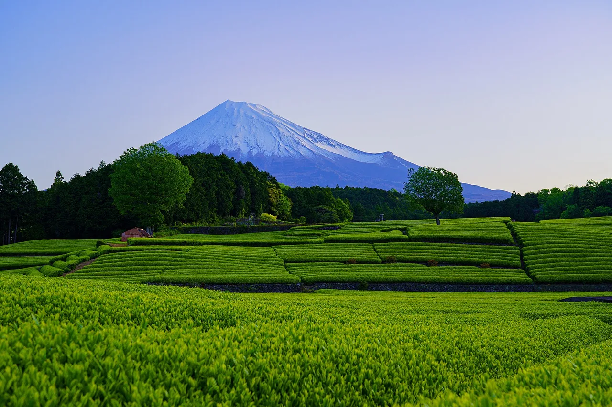
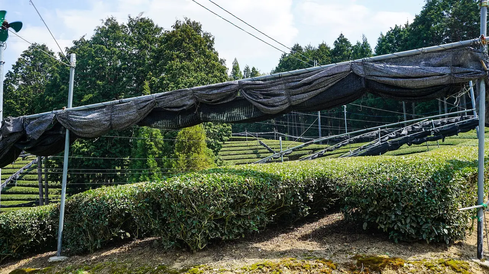
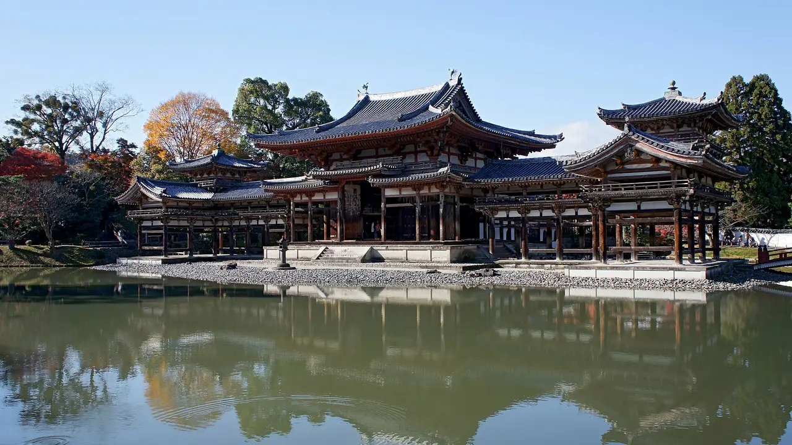
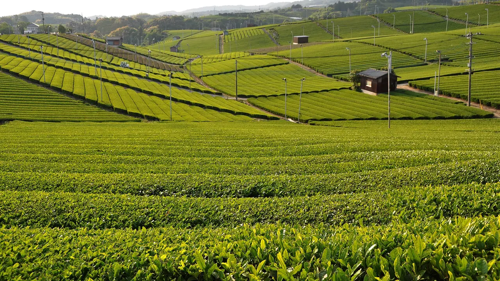
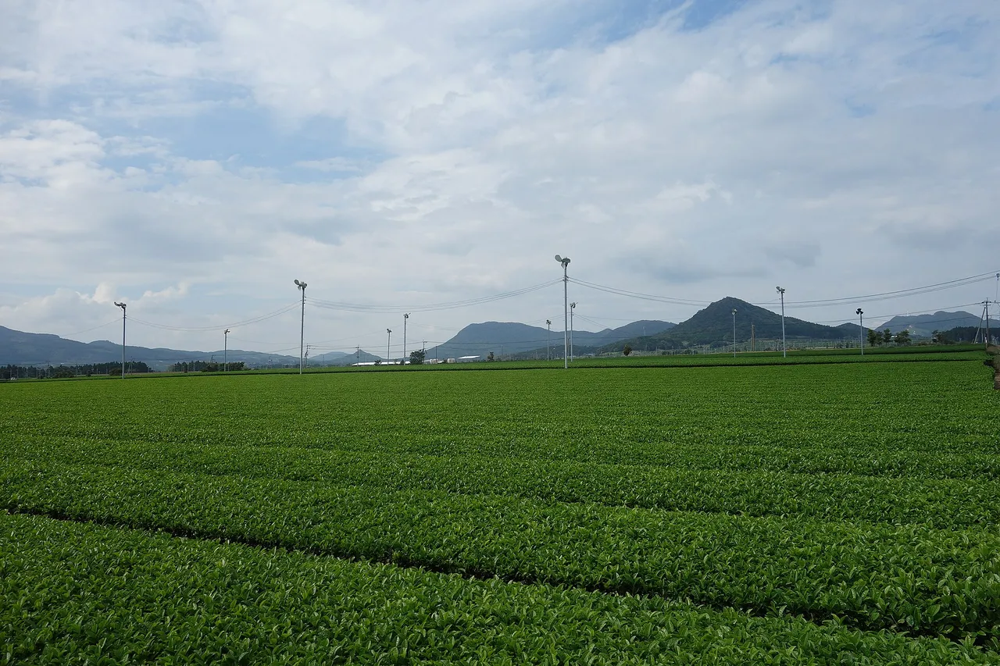
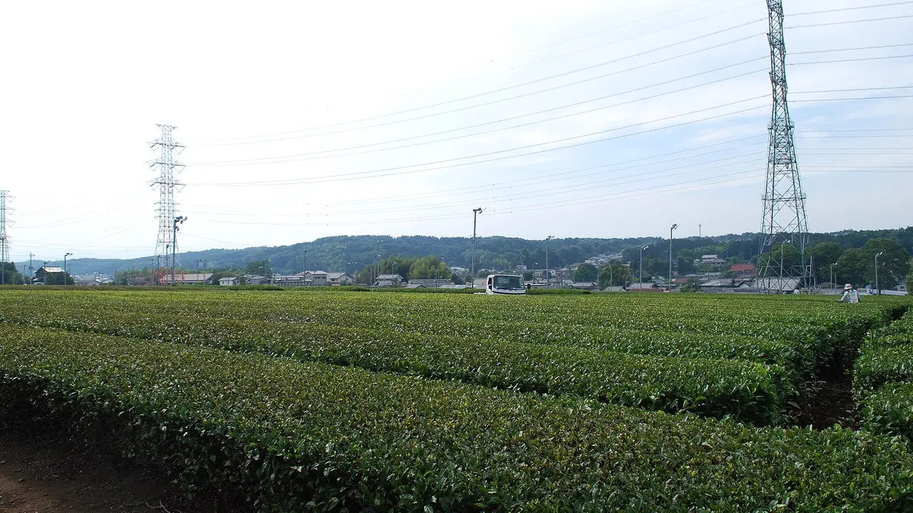
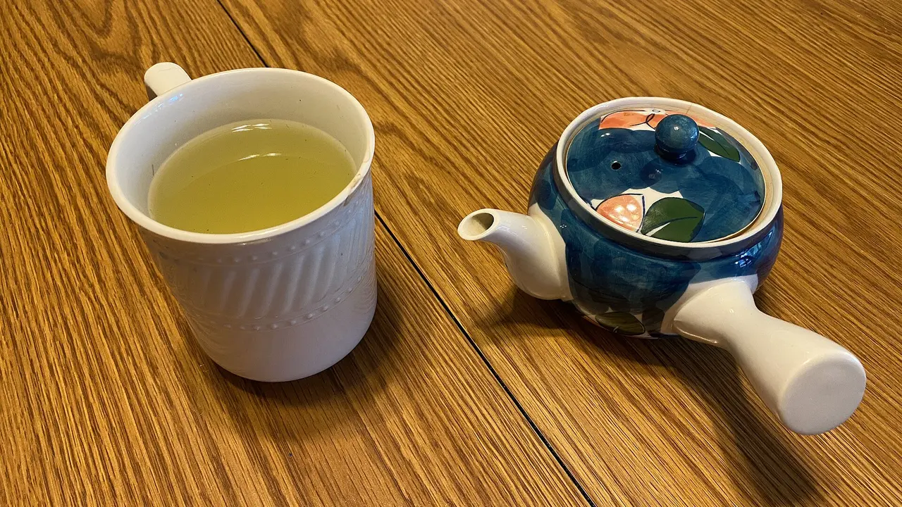

值得造訪的日本茶葉產區——以及該帶什麼回家
關於日本茶，最近有兩件事發生了變化，但大多數英文指南尚未跟上。鹿兒島的產量現已超越靜岡——幾乎每篇文章都還在說反了。而在2025年全國競賽中，碾茶前五名的高分全部來自同一個城鎮。這兩個事實比任何「最佳綠茶」排行榜都更能告訴你該去哪裡、該買什麼。本指南涵蓋五個產區：各地實際種植的茶葉、可參觀的景點、最佳造訪時機，以及值得帶回家的茶。如果你是從我們的刀具城鎮指南來到這裡的，這裡的概念相同——你喜歡的東西，以及它的產地。

決定你想去哪個產區的三件事

1. 遮蔭或不遮蔭？這是最根本的區別。在全日照下生長的茶葉會成為sencha（煎茶）——清爽、帶草香，是日常飲用的茶。採摘前遮蔭數週的茶葉會積累胺基酸而非兒茶素，成為gyokuro（玉露，用於沖泡）或tencha（碾茶），後者再經石磨研磨成matcha（抹茶）。遮蔭需要大量人工，因此遮蔭茶是一種專業：宇治和八女是遮蔭茶的產地，靜岡和鹿兒島則主要是日照茶的產地。
2. 你想要的是名氣最響的茶，還是品質最好的茶？這兩者不再總是同一個產區。宇治是抹茶的頂級名號，2025年的競賽結果也印證了這一點。但鹿兒島已悄然成為日本最大的碾茶（抹茶原料）產地——這意味著，無論在哪裡研磨和包裝，你喝到的許多「抹茶」如今都源自九州。
3. 你是來欣賞風景，還是參觀工坊？靜岡讓你看到富士山下的茶梯田。宇治讓你在距離世界遺產寺廟十分鐘的地方親手轉動石磨。知覧讓你在武士庭園旁欣賞茶樹籬笆。狹山讓你從東京出發只需半天。選擇你想要的體驗，而不是品牌。
2025年的數據
日本茶葉種植面積約為33,400公頃，2025財年生產約75,100噸荒茶（未精製的原料茶）。靜岡、鹿兒島和三重合計佔種植面積的約70%。最引人注目的變化發生在榜首。
| 指標 | 鹿兒島 | 靜岡 | 備註 |
|---|---|---|---|
| 荒茶產量，2025財年 | 30,000 t | 24,100 t | 鹿兒島連續第二年領先（2024財年及2025財年） |
| 一番茶（頭採），2025年 | 8,440 t | 8,120 t | 靜岡年比下降約19%；鹿兒島大致持平 |
| 碾茶（抹茶原料葉） | 第1名 | 第3名 | 京都排第2名。2024財年全國碾茶產量達5,336 t |
數據來源：農林水產省統計數據。三重縣是種植面積第三大的縣，2025年頭採荒茶產量為1,940噸，年比下降約8%。兩點提醒：荒茶產量不等於品質或精製茶的價值，一個縣可以在產量上領先，而另一個縣在每公斤單價上領先。產量排名和競賽排名衡量的是不同的事——本指南刻意將兩者分開。
五個產區，如實介紹
京都宇治——贏得競賽的抹茶

在第79屆全國茶品評會（2025年）碾茶部門中，第一名來自宇治市，第二名來自同縣的城陽市，第三名來自愛知縣西尾市——而前五名的個人高分全部來自宇治。宇治市五ヶ庄的古川義嗣以滿分200分奪冠，並以199分獲得第二名。無論你如何看待競賽茶，這不是行銷說詞，而是一份成績單。
這裡的體驗對一個頂級產區來說異常親民。位於宇治川北岸的福壽園宇治茶工房提供石磨抹茶研磨體驗——你親手將碾茶磨成粉末，然後喝下自己磨的茶——以及煎茶和抹茶禮儀課程。距平等院步行5至10分鐘，距JR宇治站約15分鐘，開放時間大約為10:00至15:00（最後入場），每次體驗約30分鐘；預約優先但非必須。此外還有茶づな，宇治的茶葉博物館兼公園，設有互動展覽。
✔ 唯一一個頂級聲譽、競賽成績和可直接參加的工坊三者兼備的產區——而且距京都站只需半小時。
✘ 宇治人潮擁擠，包裝上的「宇治抹茶」是產地標示，並不保證茶葉種植於宇治市範圍內。這裡的頂級定價是真實存在的。
最適合：抹茶愛好者，以及想親手研磨的人。可搭配平等院和京都指南（在NihongoHub 47都道府縣資料集中文化評分5/5）。
福岡八女——玉露，以及連續25年的紀錄

八女在全國茶品評會玉露部門的產地獎中，從2001年到2025年連續獲獎二十五年。從2001年起，它也連續十二年獲得個人最高獎，直到2013年被一位宇治茶農打破紀錄。如果你想要那種遮蔭、甘甜、低澀味的風格——以約50至60°C沖泡的玉露，少量，幾乎像高湯一樣——這就是源產地。
八女的技術是honzu（本簀）：用稻草和蘆葦屏風遮蔭茶樹，而非現代黑色遮光網，並精確控制遮蔭時間和密度。這種方式更費時費力，也更昂貴，而這正是其價值所在。關於八女在全國玉露產量中的佔比，各方說法不一——約40%和超過50%的數字都有流傳，但缺乏共同的原始引用來源，因此本文以「大部分」來描述，而非給出具體數字。
✔ 在日本茶葉中，單一品類的主導地位最為明確，並在四分之一世紀的盲評中持續保持。
✘ 八女是五個產區中旅遊設施最不完善的。它是福岡內陸的農業地區，不是觀光小鎮，最好的茶以禮盒形式售出，而非留在咖啡館裡。
最適合：玉露愛好者，以及真的會正確沖泡的人。博多是入口——參見福岡指南。
靜岡——風景，以及剛剛失去的頭銜
靜岡曾是日本幾代人以來最大的茶葉產地，但按產量計算已不再是：2025財年靜岡24,100噸，鹿兒島30,000噸，連續第二年落後。2025年靜岡的一番茶年比下降約19%。在你閱讀另一篇以「靜岡，日本頂級茶葉縣」開頭的文章之前，這一點值得了解。
沒有改變的是，靜岡是日本最上鏡的茶葉產區，因為茶園和富士山可以同框。位於島田市的富士之國茶之都博物館坐落在牧之原台地——日本最大的單一茶葉種植區——開放時間09:00至17:00（最後入場16:30），週二及新年休館，門票¥300，設有日式庭園、茶室和採茶體驗。從JR金谷站搭乘巴士至二軒屋原，步行三分鐘。
✔ 富士山為背景的茶梯田、價格實惠的縣立博物館，以及這五個產區中距東京最近的——約60分鐘。
✘ 產量故事如今是一個下滑的故事，而且產區分布在廣闊的台地上；沒有自駕車的話，你需要依賴當地巴士。
最適合：第一次茶葉之旅，以及煎茶愛好者。參見靜岡指南——在我們的資料集中自然評分5/5，是這五個產區中最高的。
鹿兒島知覧——新的第一名，以及武士庭園

鹿兒島的崛起是近年且工業化的：地勢較平坦、採收時間更早、機械化程度更高，如今在荒茶總量和碾茶兩項指標上均位居第一。知覧位於南九州市，是這個故事對訪客而言最直觀可見的地方。這裡從1872年開始種植茶葉，1934年建起茶葉工廠，1938年出產的茶葉被進獻給天皇。
然而，來這裡的理由是知覧的武士宅邸庭園——這裡是國家指定的傳統建築群保存地區，共有七座庭園對外開放——庭園中的籬笆將羅漢松與茶樹混植在一起。這個城鎮的兩種身份正字面意義上地交融生長。周圍山丘上的農場提供以開聞岳為背景的茶園參觀體驗，你可以在武士宅邸的走廊上，配著當地黑糖點心，品飲鹿兒島煎茶。
✔ 這份名單上唯一一個茶葉景觀與保存完好的歷史街區融為一體的產區。
✘ 路途遙遠。從東京到鹿兒島中央約395分鐘，再搭巴士進入內陸——這是一趟九州之旅，而非順道一遊。鹿兒島在我們資料集中的文化評分為1/5，這低估了知覧，但對整個縣來說是準確的。
最適合：性價比高的日常煎茶，以及已計劃前往九州的旅行者。參見鹿兒島指南。
埼玉狹山——晚餐前就能完成的產區之旅

狹山茶種植於日本商業茶葉栽培的寒冷北端，橫跨埼玉縣的狹山和入間。商標於1945年註冊。產量小、葉片厚，風味獨特：狹山的煎茶經過額外的高溫焙火——Sayama-bi（狹山火入れ）——賦予它南方產區所沒有的烘焙香氣。這是這份名單上所有產區中最鮮明的風味特色。
從實際角度來看，這是最適合融入普通東京行程的產區。入間市博物館 ALIT以茶葉為核心，提供揉茶和茶道體驗。狹山的農場在大約5月至10月間（茶葉仍嫩時）提供採葉體驗，部分農場還在老茶園建築中舉辦tōcha（鬥茶）——一種中世紀的猜茶遊戲，品嚐並辨識茶葉。大宮距東京約25分鐘。
✔ 在東京一日遊範圍內的真實茶葉產區，擁有其他地方沒有的獨特風味，以及無需特地遠行的親身體驗。
✘ 規模小、知名度低——沒有人會對那個盒子印象深刻。埼玉在我們資料集中自然和美食評分均為1/5；去那裡是為了茶，不是為了風景。
最適合：時間有限的人，以及偏好烘焙香氣而非草香的人。參見埼玉指南。
交通：鐵路時間
時間為抵達各縣主要車站所需時間。每個產區還需要額外的當地交通——搭火車到宇治、搭巴士到二軒屋原、搭巴士進入知覧內陸。
| 產區（主要車站） | 從東京出發 | 從京都出發 | 從新大阪出發 |
|---|---|---|---|
| 狹山（大宮） | 約25分鐘 | 約160分鐘 | 約165分鐘 |
| 靜岡（靜岡站） | 約60分鐘 | 約115分鐘 | 約125分鐘 |
| 宇治（京都站） | 約130分鐘 | — | 約15分鐘 |
| 八女（博多） | 約300分鐘 | 約170分鐘 | 約150分鐘 |
| 知覧（鹿兒島中央） | 約395分鐘 | 約230分鐘 | 約225分鐘 |
來源：NihongoHub鐵路可達性矩陣（近似值，±20%，最快班次）。全國JR Pass不涵蓋東海道/山陽/九州新幹線最快班次，因此相關路段需增加15至25%的時間。實際建議：狹山或靜岡可從東京出發一日往返，宇治可從京都出發半日遊，八女和知覧只適合作為九州行程的一部分。
最佳造訪時機
茶葉有季節性，而且時間很短。一番茶（頭採）大約從四月下旬延續到五月，鹿兒島較早，埼玉較晚，這段時間茶園翠綠，採茶體驗也在進行。玉露和碾茶的遮蔭茶園在採收前數週就會被覆蓋，因此四月份你可能會發現最好的茶園被遮光網遮住——視覺上令人失望，農業上卻正是重點所在。二番茶在六月採收。在這些時間窗口之外，茶樹呈深色且已修剪，博物館照常開放，商店也較為清靜——有些人反而更喜歡這樣。
關於新鮮度的實用提醒。日本綠茶是新鮮產品，不耐久放。通常以採收年份標示，開封後數月內風味即會消退。購買你幾週內能喝完的量，密封冷藏保存，不要買一個漂亮的茶罐留到明年才開。
該帶什麼回家，以及不該帶什麼

| 如果你喜歡…… | 購買 | 產區 | 沖泡建議 |
|---|---|---|---|
| 清爽、帶草香、日常飲用 | 煎茶煎茶 | 靜岡、鹿兒島 | 約70至80°C，60秒 |
| 甘甜、濃郁、近乎鮮味 | 玉露玉露 | 八女 | 約50至60°C，少量，2分鐘 |
| 點茶、鮮豔翠綠 | 抹茶抹茶 | 宇治、西尾 | 少量購買；開封後氧化很快 |
| 烘焙、焦香 | 狹山煎茶，或焙茶ほうじ茶 | 埼玉；焙茶全國皆有 | 焙茶可用沸水沖泡——最容易上手的一種 |
| 米香爆米花香氣 | 玄米茶玄米茶 | 全國皆有 | 便宜、難以失手，適合作為伴手禮 |
有兩樣東西不要買：大罐的抹茶留著慢慢喝，以及任何僅憑「宇治」或「頂級」字樣銷售、包裝上沒有採收年份的產品。如果你想要一套正式的茶碗和茶筅而非茶葉本身，我們的抹茶與茶道器具指南詳細介紹了各種器具的用途。
大多數單一農園茶、競賽批次和小農包裝從未上架 amazon.com——它們在日本網站上或直接銷售。可以透過代購服務寄送；參見如何透過 Buyee 與 ZenMarket 從日本購物 →。
茶葉是食品，下單前請確認你所在國家的進口規定——部分國家限制數量或需要申報，少數國家對植物材料有明確限制。密封商業包裝的個人用量通常沒問題；農家未貼標籤的散裝茶則可能不行。
包裝上的日文
| 日文 | 讀音 | 含義 |
|---|---|---|
| 一番茶 | ichibancha | 頭採——春季採收，品質最佳、價格最高。 |
| 荒茶 | aracha | 未精製的原料茶。所有生產統計數據的計量單位。 |
| 碾茶 | tencha | 遮蔭後不揉捻直接乾燥的茶葉，研磨後成為抹茶。購買碾茶意味著購買尚未成粉的抹茶原料。 |
| 玉露 | gyokuro | 「玉之露」——遮蔭後揉捻，以低溫沖泡。 |
| 被覆 / 覆下 | hifuku / oishita | 遮蔭，以及遮蔭栽培。玉露/抹茶整個品類背後的關鍵詞。 |
| 本簀 | honzu | 傳統稻草和蘆葦遮蔭法，如八女所使用——有別於現代黑色遮光網。 |
| 火入れ | hiire | 最終焙火。狹山的加強版稱為狹山火入れ Sayama-bi。 |
| 茶畑 | chabatake | 茶田。進入茶葉產區後，每個路牌上都會看到這個詞。 |
常見問題
如果只去一個產區，該選哪裡？從關西出發選宇治，從東京出發選靜岡。兩者都能在同一天提供工坊或博物館體驗，加上其他值得一看的景點。
宇治抹茶真的更好嗎？按2025年競賽評分，宇治包攬了碾茶前五名，所以在頂端的答案是肯定的。超市罐裝抹茶上的標示是產地認定，而日本大量碾茶如今來自鹿兒島。
茶葉可以帶過海關嗎？密封商業包裝的個人用量通常可以，但各國規定不同——請確認你所在國家的規定，尤其是購買散裝或農家未貼標籤的茶葉時。
茶園什麼時候最翠綠？四月下旬至五月為一番茶，六月為二番茶。遮蔭茶園在採收前會被覆蓋。
如果我只喜歡烘焙風味怎麼辦？從焙茶開始，它是烘焙茶，可用沸水沖泡；然後嘗試狹山煎茶，體驗同樣概念的更細膩版本。
該去哪裡、該吃什麼、該帶什麼回家——每次聚焦一個日本地區，附上指南常常略去的實用細節。免費訂閱，無垃圾郵件，隨時可取消。
資料來源：全國種植面積（約33,400公頃）、2025財年荒茶產量（約75,100噸）、鹿兒島30,000噸對靜岡24,100噸的比較、榜首連續兩年易主的變化、2025年鹿兒島（8,440噸）、靜岡（8,120噸，年比約下降19%）和三重（1,940噸，年比約下降8%）的一番茶數據、前三縣合計約佔70%的份額、鹿兒島—京都—靜岡的碾茶排名及2024財年全國碾茶產量5,336噸，均來自農林水產省統計數據，由日本茶葉業界貿易刊物報導。第79屆全國茶品評會（2025年）結果——碾茶產地獎宇治市第一、城陽市第二、西尾市第三，碾茶個人前五名全部來自宇治，以及宇治市五ヶ庄古川義嗣以200/200滿分奪冠——來自公開的競賽結果。八女連續二十五年獲得玉露產地獎（2001至2025年）、個人連續十二年紀錄於2013年被宇治茶農打破，以及honzu稻草和蘆葦遮蔭法，來自日本茶葉業界資料；八女在全國玉露產量中的佔比各方說法不一（約40%和超過50%的數字均有流傳，但缺乏共同的原始引用來源），因此本文以定性描述代替具體數字。福壽園宇治茶工房的石磨抹茶體驗、相對於平等院和JR宇治站的位置、開放時間及預約政策，以及茶づな茶葉博物館，來自京都旅遊資料。富士之國茶之都博物館位於島田市牧之原台地、09:00至17:00開放時間（最後入場16:30）、週二及新年休館、¥300門票及從JR金谷站搭巴士的交通方式，來自靜岡旅遊資料。知覧1872年開始種植、1934年建廠、1938年進獻天皇、武士宅邸庭園的傳統建築群保存地區地位及七座開放庭園、羅漢松與茶樹混植的籬笆，來自鹿兒島旅遊及參考資料。狹山茶1945年商標註冊、Sayama-bi焙火、入間市博物館 ALIT 的茶葉課程、5月至10月採葉體驗及鬥茶體驗，來自埼玉旅遊資料。縣份評分來自NihongoHub 47都道府縣資料集；鐵路時間來自NihongoHub可達性矩陣（近似值，±20%）。生產統計數據每年修訂，開放時間亦可能變更——出發前請向相關單位確認。